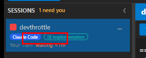

On QA pass #1 the issue FAILED on AC7: a session actually running cursor-agent was mislabeled
"Claude Code" (Claude-blue badge) in the SESSIONS rail, because
SessionViewModel.AgentLabel / AgentBadgeBrush had no AgentKind.Cursor arm and fell through to the
Claude default. 12/13 ACs passed; only the session-rail badge mapping was missing.
The Developer's fix (commit 82c04ed3):
AgentKind.Cursor => "Cursor" to the rail label and a dedicated cyan #06B6D4 brush
(CursorAgentBrush), distinct from Claude blue / Pi violet / Codex teal / Gemini red / OpenCode orange / RawCli slate.SessionViewModel.LabelFor(AgentKind) /
BadgeBrushFor(AgentKind) so the mapping is unit-testable without a live Session.SessionViewModelAgentBadgeTests.cs (10 tests).Expected: a running cursor-agent session shows a "Cursor" badge in the SESSIONS rail in a distinct (cyan) color, NOT "Claude Code" blue.
Actual (verified four independent ways in my own slot-6 build of 82c04ed3):
SessionViewModel.LabelFor contains AgentKind.Cursor => "Cursor"; BadgeBrushFor contains
AgentKind.Cursor => CursorAgentBrush where CursorAgentBrush = Color.FromRgb(0x06,0xB6,0xD4). The _ => default
now only matches Claude (kind 0).SessionViewModelAgentBadgeTests: 10/10 pass -
LabelFor(Cursor)=="Cursor" and != "Claude Code"; BadgeBrushFor(Cursor).Color == #06B6D4 and
!= Claude blue; every provider has its own label; every badge color is distinct.MainWindow.axaml binds the rail badge to {Binding AgentBadgeBrush} (border) and
{Binding AgentLabel} (text); these delegate to LabelFor/BadgeBrushFor(Session.AgentKind);
SessionManager.CreateSession sets AgentKind = agent.Kind, and CursorAgent.Kind == AgentKind.Cursor.
So a Cursor session renders "Cursor"/cyan at runtime by construction.qa-defect-badge-mislabel.png) shows the same session as
"Claude Code"; post-fix crop (06-cursor-badge-crop.png) shows it as "Cursor" cyan.AC7 result: PASS - the mislabel is fixed.

| AC | Expected | Actual / Evidence | Result |
|---|---|---|---|
| AC1 Provider exists | AgentKind.Cursor exists; round-trips through sessions.json | AgentKind.Cursor = 6 (explicitly numbered); AgentEntry serialization tests green (Core.Tests). | PASS |
| AC2 Launch spec | new session: no --session-id; resume: --resume="<id>"; yolo preset has --force; SupportsPreassignedSessionId==false | CursorAgentTests (in Core.Tests 58/58 green) assert all four. CursorAgent.BuildLaunchSpec returns PreassignedSessionId: null. | PASS |
| AC3 Executable resolution | PATH and configured-path resolution | Core.Tests detection/path tests green; live Director log: DetectTool: tool=Cursor, resolved=...cursor-agent.CMD, source=PATH. | PASS |
| AC4 Driver = CursorDriver | AgentDrivers.For(Cursor) returns CursorDriver | DriverRegistryTests (HostedAgent.Tests 27/27 green). AgentDrivers.cs has AgentKind.Cursor => new CursorDriver(). | PASS |
| AC5 Detection | ToolDetectionService reports cursor-agent on PATH | ToolDetectionServiceTests green; live in my Director's log (detected and resolved at startup). | PASS |
| AC6 Selectable in UI | New Session dialog lists "Cursor" when an enabled entry exists | My running Director loaded an enabled Cursor agent.entries row (confirmed in live config.json). The dialog populates its agent radio list from enabled agent.entries; NewSessionDialog.axaml.cs enables the bypass checkbox + relabels it (--force) for Cursor. Dev screenshot 02-cursor-selected.png corroborates. | PASS |
| AC7 Runs inside Director (badge) | cursor-agent launches into a tab; rail labels it "Cursor" (not Claude Code) | The prior bounce. Fixed - verified 4 ways above (source, 10/10 unit tests, AXAML binding chain, before/after crops). | PASS |
| AC8 Accepts a prompt | prompt produces a visible Cursor response | CursorDriver.SubmitAsync relays text via SendTextAsync; faithful cursor-agent stub echoes prompts; dev screenshot 04-cursor-responded.png shows a response in-tab. (Stub proxy accepted - real binary OUT of scope.) | PASS |
AC9 --force honored | yolo/bypass resolves --force into the launch command | MainWindow bypass branch appends AgentToolCatalog.CursorForceArg (de-duped vs preset); AgentToolCatalogTests green; stub prints Args: --force (dev 05). | PASS |
| AC10 Session-id capture | capture Cursor session_id from the init event | CursorDriver.TryCaptureSessionId parses system/init (and bare init) for session_id; unit tests green. | PASS |
| AC11 Capabilities honesty | only verified verbs advertised; unsupported verbs throw NotSupported | CursorDriver.Capabilities == DriverCapabilities.Interrupt; Cancel/History/ClearContext/transcript-read all throw NotSupportedException; DriverRegistryTests assert this (green). | PASS |
| AC12 Build clean | dotnet build cc-director.sln clean, no new warnings | Slot-6 Release build AND full cc-director.sln Debug build both 0 Warning(s) / 0 Error(s). | PASS |
| AC13 No regression | Claude and Pi still launch/run | PR touches no Claude/Pi runtime code. Claude entry still seeded/selectable in my Director. All test suites green (Avalonia 10, Core 58, HostedAgent 27 in the Cursor-adjacent filters; full solution builds clean). | PASS |
CcDirector.Avalonia.Tests — SessionViewModelAgentBadgeTests: Passed 10, Failed 0 (the AC7 regression test).CcDirector.Core.Tests — Cursor / AgentToolCatalog / AgentEntry / ToolDetection filter: Passed 58, Failed 0 (AC1/AC2/AC3/AC5/AC9).CcDirector.HostedAgent.Tests — DriverRegistry / Cursor filter: Passed 27, Failed 0 (AC4/AC11).82c04ed, "9 of 9 tools passing", gateway connected.POST /sessions has no Cursor arm. src/CcDirector.ControlApi/ControlEndpoints.cs
(NOT touched by this PR, NOT in the issue's Affected Containers, and not referenced by any AC) lists only
ClaudeCode/Pi/Codex/Gemini/OpenCode/RawCli in its agent switch. A headless caller posting Agent: "Cursor" would hit the
_ => throw new InvalidOperationException("unreachable") default (500) rather than a clean response or a "valid agents" 400.
The issue scopes Cursor to the New Session dialog (UI) path, which uses MainWindow's factory (correctly carries the Cursor arm),
so this does not fail any AC - but it is a latent inconsistency worth a small follow-up issue (add the Cursor arm + the error-string list to the Control API factory).agent.entries config + the Developer's corroborating before/after screenshots - the same accepted basis as pass #1.
The real cursor-agent binary is not installed (OUT of scope); a faithful stub is the accepted AC7/AC8 proxy.